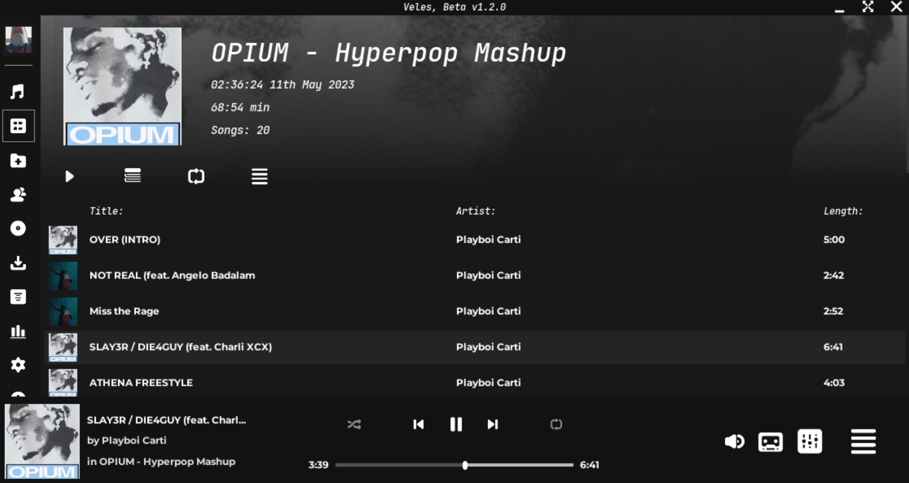
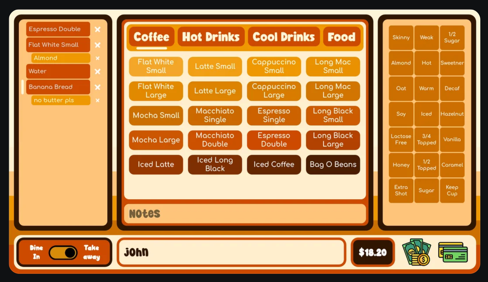

Natao t@ Godot
Veles
Application de musique gratuite et open source (voici le repo github) écrit en Godot.
Lecture, édition metadata, effets, playlists, lyrics, cover, export, download, stats...

Godello
Clone open source de Trello fait avec Godot et disponible en open source (voici le repo github).
L'auteur, Alfred Reinold Baudisch est un fervent utilisateur/evangeliste de Godot. Il créée aussi des vidéos de cours
sur Godot pour Udemy (par exemple, ce système d'inventaire).

CoolPOS
App de POS (point of sales) gratuit et open source. Utilise Godot-SQLite comme base de données.

Habituary (alpha)
App de gestion de TO-DO, démontrant l'usage de Godot en business app (non jeux).
L'auteur Benjamin Oesterle a fin un atelier (EN) indiquant ses retours d'experience en réalisant
l'app dans cette vidéo Youtube
Pixelorama
App de création pixel art gratuit et open source. Le repo github est aussi disponible ici.
Lorien
Repo github d'une app open source de prise de note et de dessin à canvas infini
Pixelover (payant)
App de création pixel art: animation, gradient, kinematics, mesh, particle, material shader, bones, drawing tool,...